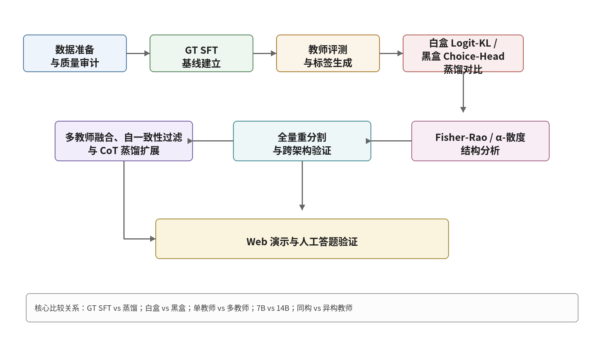
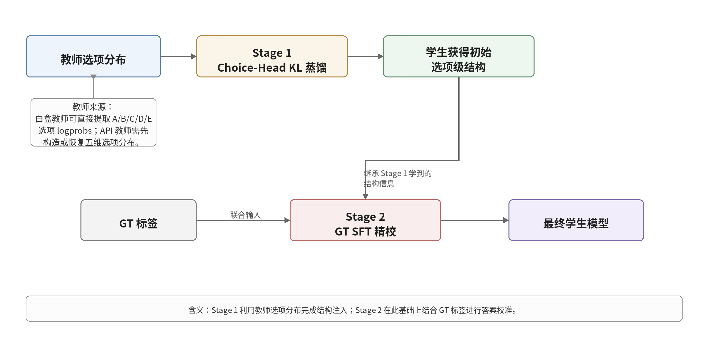
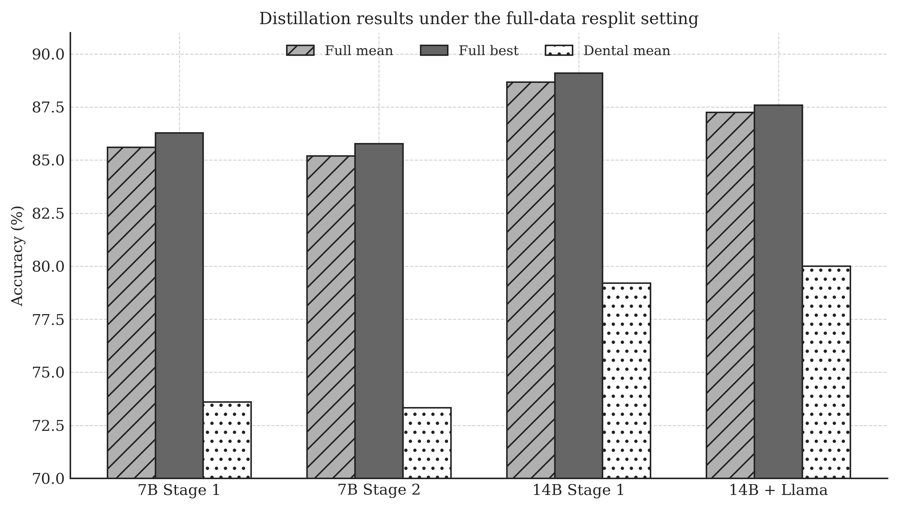
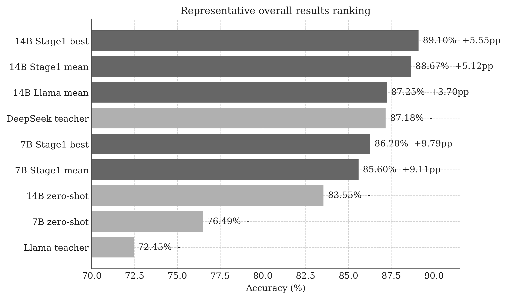

快速判断
先看这项研究回答了什么
能不能把大模型的答题能力迁移到更轻的学生模型，什么方法最适合这个任务，以及结果在更大测试集上是否依然成立。
硕士论文研究
这项研究的核心，不只是把分数做高，而是把问题、方法和验证过程都做成一条可以复述的 AI 研究链路。
这项研究最重要的价值
这让我对 AI 的理解不只停留在模型名词，而是进入到了任务定义、实验设计和结果解释层面。
把问题明确限定在医学选择题场景，避免研究范围失控。
围绕蒸馏方式、学生容量和数据规模做系统对照，不凭感觉下结论。
把结果放到更大的测试集里复核，确认结论不是偶然峰值。
我的理解
这项研究的价值，不只是把某个结果跑高，而是把问题定义、方法选择和结果解释串成了一条可复述、可讨论的研究链路。
关键数字
在 991 题全量测试集上的最好结果，说明学生模型具备稳定竞争力。
不仅有单点峰值，也有均值支撑，结果不是偶然波动。
从基线到异构教师蒸馏，整条实验路径足够完整，可以支持方法判断。
方法判断
先建立 GT SFT 基线，保证后续所有提升都有清晰对照对象。
围绕五选一题型只蒸馏 A/B/C/D/E 选项分布，让方法更贴近任务结构本身。
把测试集从 83 题扩到 991 题，验证结论在更大样本上的稳定性。
研究结论
它直接围绕选择题的五个选项做蒸馏，比更重的白盒方案更贴近这个任务，也更适合落地表达。
14B 学生单阶段蒸馏时峰值达到 84.34%，继续做 GT SFT 反而可能回退，说明方法设计必须考虑学生基线。
14B 学生三种子均值 88.67%，高于教师 87.18%；最佳 89.10%，而且极差只有 0.70pp。
图表
如果不想看完整报告，看这四张图已经足够理解研究路径、方法核心和结果位置。



